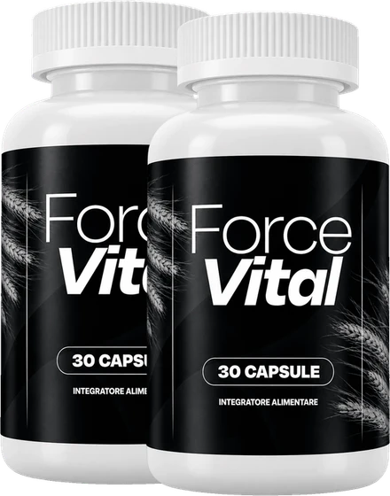
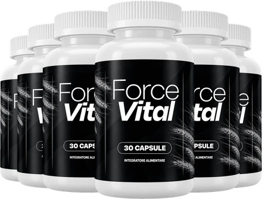

Che cos’è ForceVital e come agisce?
ForceVital è un integratore alimentare in capsule pensato per gli uomini adulti. Il sito ufficiale lo presenta come una formula di nutrienti ed estratti vegetali per accompagnare la vitalità maschile, l’energia e il benessere generale, con una sola capsula al giorno.
Ogni flacone contiene 30 capsule, cioè circa un mese di utilizzo. L’etichetta italiana lo definisce semplicemente «integratore alimentare» e riporta in una tabella chiara la dose di ciascun ingrediente per capsula, un dettaglio che non tutti i prodotti di questa categoria offrono.
La formula riunisce otto ingredienti principali: la vitamina B3 (niacina), lo zinco, la L-citrullina, la L-carnitina, un estratto di corteccia di pino marittimo, un estratto di radice di maca, un estratto di buccia d’uva e un estratto di stimmi di zafferano.
Come agisce? Le affermazioni più solide sono quelle sui nutrienti: secondo l’etichetta, lo zinco contribuisce al mantenimento di livelli normali di testosterone nel sangue e la niacina contribuisce a ridurre la stanchezza e l’affaticamento. Il sito aggiunge che la vitamina B3 contribuisce al normale metabolismo energetico. Gli altri ingredienti sono descritti come tradizionalmente usati negli integratori per il benessere maschile.
ForceVital è venduto tramite Digistore24, una piattaforma di pagamento affermata. Secondo l’etichetta, nell’Unione europea il prodotto è distribuito da Digistore24 MSLW Limited, a Dublino, con un indirizzo per i resi nei Paesi Bassi.
È importante avere aspettative realistiche: i risultati possono variare da persona a persona, e un integratore non sostituisce un’alimentazione varia ed equilibrata, l’attività fisica e un buon riposo, come ricorda la stessa etichetta.
ForceVital resta un integratore alimentare: non è destinato a diagnosticare, trattare, curare o prevenire alcuna malattia, e non sostituisce il parere del medico né una terapia prescritta.
ForceVital – Ingredienti
Secondo la tabella nutrizionale pubblicata sul sito ufficiale e riportata sull’etichetta, una capsula di ForceVital apporta:
Vitamina B3, come niacina (20 mg, 125% del VNR): contribuisce al normale metabolismo energetico e alla riduzione della stanchezza.
Zinco, come ossido di zinco (11 mg, 110% del VNR): contribuisce al mantenimento di livelli normali di testosterone nel sangue.
L-citrullina (150 mg) e L-carnitina (150 mg): due aminoacidi molto diffusi negli integratori per uomo.
Estratto di corteccia di pino marittimo, Pinus pinaster (100 mg) ed estratto di radice di maca, Lepidium meyenii (50 mg).
Estratto di buccia d’uva, Vitis vinifera (15 mg) ed estratto di stimmi di zafferano, Crocus sativus (5 mg).
Solo la vitamina B3 e lo zinco hanno un valore nutritivo di riferimento; per gli aminoacidi e gli estratti vegetali l’etichetta precisa che non è stato stabilito alcun VNR. Gli altri componenti sono la capsula vegetale (ipromellosa), la cellulosa microcristallina e gli antiagglomeranti.
Un dettaglio da notare: l’elenco degli ingredienti sull’etichetta cita anche un estratto di Mucuna pruriens, che non compare nella tabella nutrizionale. Conviene quindi leggere l’etichetta del flacone ricevuto e mostrarla al medico o al farmacista in caso di dubbi.
ForceVital – Effetti collaterali
Il sito ufficiale descrive ForceVital come una formula «senza sostanze chimiche aggressive né effetti collaterali», ma pubblica comunque avvertenze chiare, che vanno prese sul serio. Il prodotto non è indicato per chi ha meno di 18 anni, né per le donne in gravidanza o in allattamento, e la dose raccomandata non va superata.
L’etichetta consiglia di consultare un medico prima dell’uso, in particolare in caso di assunzione di farmaci, problemi di salute o sorveglianza medica. È un passaggio sensato per una formula che combina aminoacidi, minerali ed estratti vegetali, perché le possibili interazioni dipendono sempre dalla situazione personale.
È noto in generale che la niacina, a dosi più alte, può provocare in alcune persone un arrossamento passeggero della pelle con una sensazione di calore. Una capsula di ForceVital contiene 20 mg di niacina: chi assume già altri integratori con vitamina B3 o zinco dovrebbe tenere conto della quantità totale.
Come per ogni nuovo integratore, conviene seguire esattamente le indicazioni e osservare come reagisce l’organismo nei primi giorni. In caso di fastidi, è meglio interrompere l’assunzione e parlarne con il medico, mostrandogli l’etichetta.
Non utilizzare il prodotto se il sigillo di sicurezza è danneggiato o mancante, e tenerlo fuori dalla portata dei bambini. La tollerabilità individuale può variare.
ForceVital – Posologia
L’indicazione dell’etichetta è semplice: gli adulti assumono una (1) capsula al giorno come integratore alimentare. Un flacone da 30 capsule corrisponde quindi a circa un mese di utilizzo.
Il sito ufficiale consiglia di prendere la capsula preferibilmente al mattino, con acqua. Assumerla ogni giorno alla stessa ora, per esempio a colazione, aiuta a non dimenticarla: con gli integratori la regolarità conta più dell’orario preciso.
Non bisogna superare la dose raccomandata. Più capsule non portano risultati migliori, ma aumentano la quantità di niacina e di zinco assunta ogni giorno. Una capsula dimenticata non va recuperata raddoppiando la dose il giorno dopo.
Chi assume farmaci, segue una terapia o ha una condizione medica dovrebbe parlarne con il medico prima di iniziare, come raccomanda l’etichetta.
Per la conservazione, l’etichetta indica un luogo fresco e asciutto, a una temperatura inferiore a 30 °C, fuori dalla portata dei bambini. La data di scadenza è riportata sul fondo del flacone, che va richiuso bene dopo ogni uso.
ForceVital accompagna uno stile di vita sano, con un’alimentazione equilibrata, movimento e sonno sufficiente, ma non lo sostituisce. I risultati possono variare da persona a persona.
ForceVital – Rimborso
Secondo il sito ufficiale, ogni ordine di ForceVital è coperto da una garanzia soddisfatti o rimborsati di 30 giorni, senza domande. La politica di rimborso fa partire il termine dalla data di ricevimento del pacco, verificabile con il codice di tracking sul sito del corriere.
Passo 1 – Verificare il termine: controllare di trovarsi ancora entro i 30 giorni dal ricevimento del pacco.
Passo 2 – Contattare l’assistenza: inviare un’e-mail a contact@vital-roots.site con «Richiesta di rimborso» nell’oggetto, così la richiesta viene trattata con priorità. Non è necessario indicare alcun motivo. Il sito indica anche il numero di telefono +1 (814) 300-8171.
Passo 3 – Restituire i flaconi: rispedire tutti i flaconi, vuoti o pieni, aperti o meno, insieme al documento di consegna e a un biglietto con nome completo, e-mail e, facoltativamente, numero d’ordine. L’indirizzo indicato è c/o ForceVital, Kleine Esch 669, 2841 MK Moordrecht, Paesi Bassi. I costi del reso sono a carico del cliente.
Passo 4 – Attendere il rimborso: secondo il sito, il rimborso viene elaborato dopo il ricevimento del pacco, in 5-10 giorni, con un’e-mail di conferma. L’accredito sull’estratto conto può richiedere più tempo, a seconda della banca.
Conviene leggere la politica completa sul sito ufficiale prima di ordinare e conservare la conferma d’ordine e il codice di tracking del reso.
ForceVital – Dove acquistarlo?
ForceVital si ordina sul suo sito ufficiale, forcevital.site, e il pagamento è gestito da Digistore24. Secondo il sito, entro 60 ore dall’ordine arriva un’e-mail con il codice di tracking, e la maggior parte degli ordini in Italia e nell’UE viene consegnata in 5-7 giorni lavorativi.
I flaconi proposti da venditori sconosciuti possono sembrare identici, ma la loro provenienza e le condizioni di conservazione non sono verificabili. Per un integratore alimentare è una questione concreta di qualità e sicurezza, e un acquisto fatto altrove potrebbe non essere coperto dalla garanzia di 30 giorni.
Per questo la maggior parte degli acquirenti ordina ForceVital direttamente alla fonte. Il sito ufficiale permette di ricevere il prodotto originale, con l’assistenza clienti e la garanzia completa. Anche gli annunci sui grandi marketplace online vanno quindi valutati con cautela.
Prima di confermare l’ordine, è bene verificare di trovarsi davvero sul sito ufficiale di ForceVital, controllando l’indirizzo nella barra del browser e il passaggio al pagamento su Digistore24, per evitare contraffazioni e imitazioni vendute online.
Per essere sicuri di ricevere il prodotto originale, la maggior parte degli utenti sceglie di passare dal sito ufficiale.
2 flaconi
Fornitura per 60 giorni

€79 / flacone
€158 in totale
Solo €2,63 al giorno
- Garanzia di 30 giorni soddisfatti o rimborsati
- + €20,00 di spedizione

6 flaconi
Fornitura per 180 giorni

€49 / flacone
€294 in totale
Solo €1,63 al giorno
- Garanzia di 30 giorni soddisfatti o rimborsati
- Spedizione gratuita
3 flaconi
Fornitura per 90 giorni
€69 / flacone
€207 in totale
Solo €2,30 al giorno
- Garanzia di 30 giorni soddisfatti o rimborsati
- Spedizione gratuita
ForceVital è una truffa?
In base al sito ufficiale e all’etichetta, ForceVital non sembra una truffa. Si tratta di un vero integratore alimentare, venduto tramite Digistore24, una piattaforma affermata, e pensato per gli uomini adulti che vogliono sostenere energia e vitalità nella vita di tutti i giorni.
Tra i punti positivi ci sono una tabella nutrizionale completa con la dose di ogni ingrediente, una posologia chiara, avvertenze precise, i dati del distributore europeo e una procedura di rimborso spiegata passo dopo passo. Le affermazioni su zinco e niacina corrispondono a funzioni riconosciute di questi nutrienti.
Alcuni punti invitano però alla prudenza. Il sito parla di una formula «senza effetti collaterali», mentre l’etichetta riporta avvertenze; descrive pino e citrullina come un supporto alla circolazione, dopo aver scritto il contrario poche righe sopra; e l’elenco degli ingredienti cita la Mucuna pruriens, assente dalla tabella. Anche i dati aziendali cambiano da pagina a pagina: Paesi Bassi, Brasile e Irlanda. Infine, una pagina fa partire la garanzia dal pagamento, un’altra dal ricevimento del pacco.
Il nostro consiglio: leggere con attenzione l’etichetta del flacone, conservare la conferma d’ordine e parlarne con il medico in caso di farmaci o problemi di salute.
Per gli uomini che cercano un integratore quotidiano semplice, con una formula trasparente, ForceVital può essere un’opzione da considerare, preferibilmente ordinata sul sito ufficiale e con la garanzia di 30 giorni.
Per verificare i dettagli del prodotto o la sua disponibilità attuale, il sito ufficiale di ForceVital resta l’opzione più sicura.
2 flaconi
Fornitura per 60 giorni
€79 / flacone
€158 in totale
Solo €2,63 al giorno
- Garanzia di 30 giorni soddisfatti o rimborsati
- + €20,00 di spedizione
6 flaconi
Fornitura per 180 giorni
€49 / flacone
€294 in totale
Solo €1,63 al giorno
- Garanzia di 30 giorni soddisfatti o rimborsati
- Spedizione gratuita
3 flaconi
Fornitura per 90 giorni
€69 / flacone
€207 in totale
Solo €2,30 al giorno
- Garanzia di 30 giorni soddisfatti o rimborsati
- Spedizione gratuita
Domande frequenti su ForceVital
Che cos’è ForceVital e come agisce?
ForceVital è un integratore alimentare in capsule pensato per gli uomini adulti. Il sito ufficiale lo presenta come una formula di nutrienti ed estratti vegetali per accompagnare la vitalità maschile, l’energia e il benessere generale, con una sola capsula al giorno.
Quali ingredienti contiene ForceVital?
Secondo la tabella nutrizionale pubblicata sul sito ufficiale e riportata sull’etichetta, una capsula di ForceVital apporta:
ForceVital ha effetti collaterali?
Il sito ufficiale descrive ForceVital come una formula «senza sostanze chimiche aggressive né effetti collaterali», ma pubblica comunque avvertenze chiare, che vanno prese sul serio. Il prodotto non è indicato per chi ha meno di 18 anni, né per le donne in gravidanza o in allattamento, e la dose raccomandata non va superata.
Come si assume ForceVital?
L’indicazione dell’etichetta è semplice: gli adulti assumono una (1) capsula al giorno come integratore alimentare. Un flacone da 30 capsule corrisponde quindi a circa un mese di utilizzo.
C’è una garanzia soddisfatti o rimborsati?
Secondo il sito ufficiale, ogni ordine di ForceVital è coperto da una garanzia soddisfatti o rimborsati di 30 giorni, senza domande. La politica di rimborso fa partire il termine dalla data di ricevimento del pacco, verificabile con il codice di tracking sul sito del corriere.
Dove si può acquistare ForceVital?
ForceVital si ordina sul suo sito ufficiale, forcevital.site, e il pagamento è gestito da Digistore24. Secondo il sito, entro 60 ore dall’ordine arriva un’e-mail con il codice di tracking, e la maggior parte degli ordini in Italia e nell’UE viene consegnata in 5-7 giorni lavorativi.
ForceVital è una truffa?
In base al sito ufficiale e all’etichetta, ForceVital non sembra una truffa. Si tratta di un vero integratore alimentare, venduto tramite Digistore24, una piattaforma affermata, e pensato per gli uomini adulti che vogliono sostenere energia e vitalità nella vita di tutti i giorni.